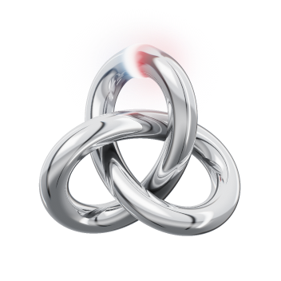

Design app
Design screens with an AI agent on a live canvas. Say what you want: the agent studies real products, then builds it in front of you. Change anything yourself, or point the agent at a frame to change it for you.
Version 0.2.3. The Mac app needs a Mac with Apple silicon (M1 or later). Windows builds are for x64 and Arm, Linux builds for x64 and arm64.
All downloads
Installing
On a Mac
- Open the .dmg and drag Design app into Applications.
- Open Design app. The first time, macOS says it can’t check the app for malware, because it isn’t notarized by Apple yet. Click Done.
- Open System Settings, go to Privacy & Security, and click Open Anyway next to the message about Design app.
If macOS says the app is damaged, run this in Terminal, then open it again:
xattr -dr com.apple.quarantine "/Applications/Design app.app"On Windows
- Open the installer. If Windows says it protected your PC, that’s because the app isn’t signed yet: click More info, then Run anyway.
- It installs Design app in your user account, without asking for an administrator, and opens it. After that it’s in the Start menu and on the desktop.
Claude Code needs Git for Windows to run on Windows.
On Linux
On Debian, Ubuntu and their derivatives, install the .deb. It adds Design app to your app menu and design-app to your PATH.
sudo apt install ./design-app-0.2.3-linux-amd64.debOn any other distribution, make the AppImage executable and run it:
chmod +x design-app-0.2.3-linux-x86_64.AppImage
./design-app-0.2.3-linux-x86_64.AppImageOn Ubuntu 24.04 and later, the AppImage may need --no-sandbox to start. The .deb doesn’t.
What it needs
- Claude Code, installed and signed in. The agents run on it.
- Chrome or Chromium, to take screenshots of your designs.
- To share a design at a link anyone can open: the GitHub CLI, signed in with
gh auth login. Shared designs go on GitHub Pages, in a public repository on your account.
On Windows and Linux, Design app updates itself. On a Mac, it tells you when a new version is out, and you download it here.